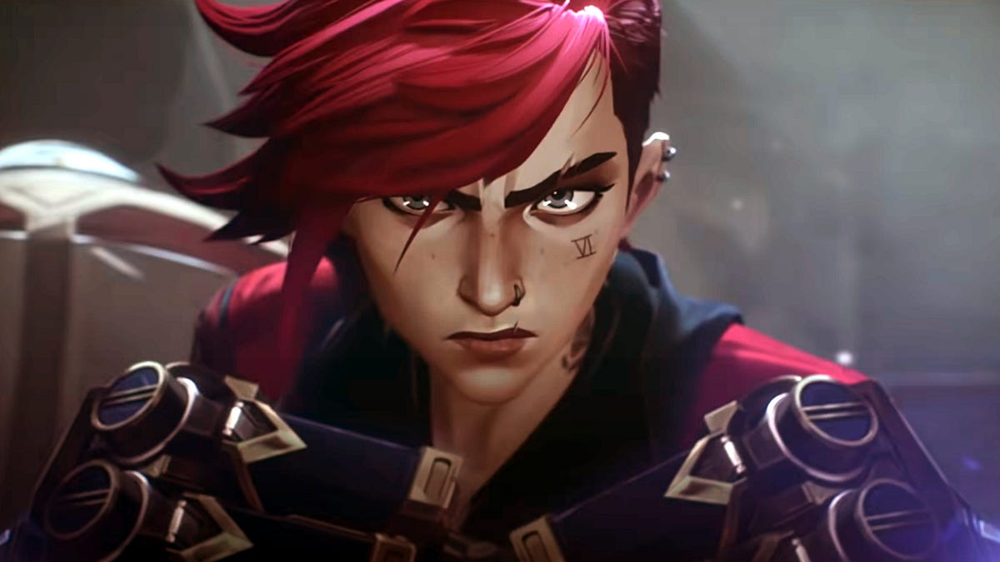
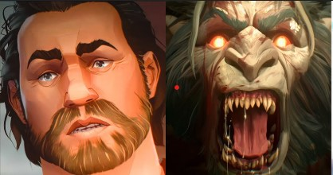
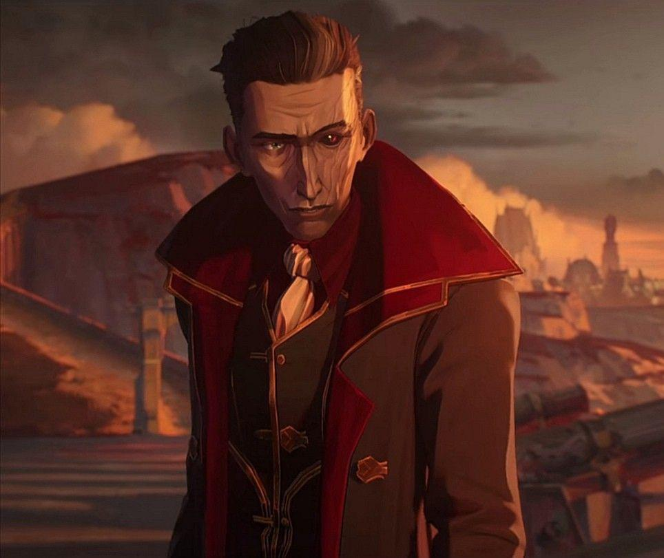
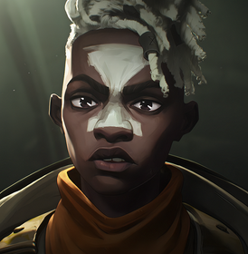
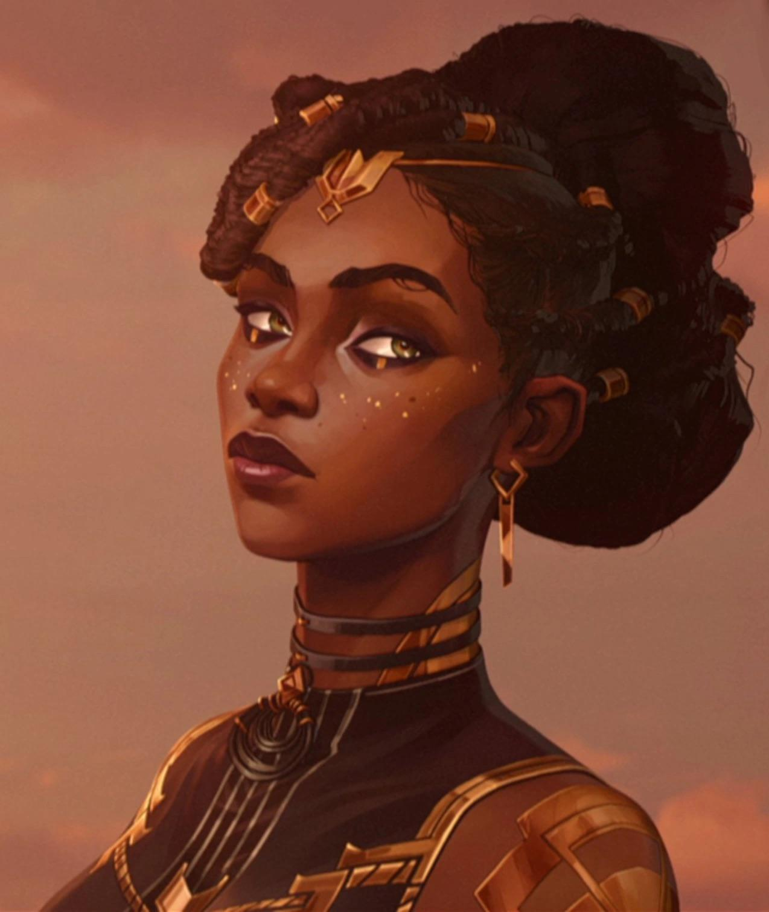
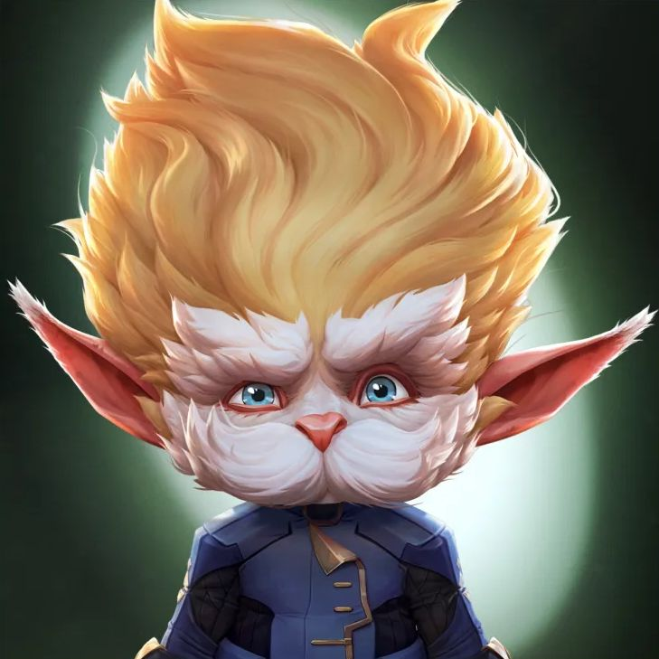
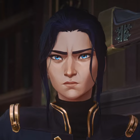

¿Qué es Arcane?
Arcane es una serie animada de aventuras y drama basada en el universo de League of Legends, producida por Riot Games y animada por el estudio francés Fortiche Production.
Sinopsis
Con las dispares ciudades de Piltover y Zaun como telón de fondo, dos hermanas luchan en bandos opuestos de una guerra entre tecnologías mágicas y creencias enfrentadas.
Personajes:
- Powder/Jinx:
- Vi:
- Vander/Warwick:
- Silco:
- Ekko:
- Jayce:
- Viktor:
- Mel:
- Heimerdinger:
- Caitlyn:
- Singed:

Una niña huérfana que vaga por los suburbios de Zaun junto a su hermana mayor, Vi y bajo la tutela de Vander, su padre adoptivo. Se caracteriza por su actitud errática, inestable e impulsiva; esto debido a distintos traumas que sufrió en el pasado, especialmente desde la muerte de Vander, Mylo y Claggor, que esta provocó accidentalmente con uno de sus explosivos. Pero lo que la catapultó a la soledad y la locura fue principalmente el abandono de su hermana Vi desde aquel incidente, lo que a su vez provocó que Jinx tuviera un fuerte resentimiento por su hermana a raíz de ello, pero también es una muy creativa y explosiva inventora.

Una adolescente huérfana que vaga por los suburbios de Zaun junto a su hermana pequeña, Powder y bajo la tutela de Vander, su padre adoptivo. Es una experta del combate cuerpo a cuerpo, de sangre caliente y poca paciencia, aunque toda una líder. Sin embargo, desde el incidente que le costó la vida a Vander, Mylo y Claggor, provocado de forma accidental por su hermana Powder, se enfadó con ella hasta el punto de golpearla y decirle que siempre fue una maldición. Sin embargo, tan pronto como le dijo todo esto y se alejó de ella llorando, Vi se arrepintió de todo lo que dijo y trató de disculparse con su hermana, pero en ese momento Powder cayó bajo la tutela de Silco y trató de rescatarla. Desafortunadamente acabó siendo atrapada por Marcus, un agente de la policía de Piltover que en ese entonces era un novato, que la arrestó bajo el pretexto de salvarla de una muerte segura si trataba de rescatar a Powder de Silco y es llevada a prisión. Unos años más tarde, Vi, ahora algo más madura, sería liberada de la cárcel de Piltover por una joven oficial de policía llamada Caitlyn para ayudarla en su investigación sobre los atentados provocados por Jinx y Silco. Además de ello, Vi trata de encontrarse con su hermana una vez más para reconciliarse con ella por todo lo que le dijo en el pasado.

El padre adoptivo de Powder y Vi, además de otros dos chicos, Mylo y Claggor. Es una de las personalidades más importantes de Zaun, debido a su pasado y el respeto que ha conseguido, además de ser propietario del bar "La última gota". Silco y él eran viejos amigos, pero Vander lo traicionó.

El líder criminal del bajo mundo de Zaun, temido por todos en la ciudad y con la misión de experimentar con una droga morada nueva, llamada shimmer, que convierte a las personas en monstruos más fuertes aunque pierden completamente la cabeza. Él y Vander tienen cuentas pendientes.

Un joven genio inventor amigo de Powder. Fue adoptado por un viejo amigo de Vander llamado Benzo y trabaja en su local.

Uno de los inventores más prometedores de Piltover, el cual pretende utilizar la magia que le salvó la vida cuando era pequeño para llevar a su ciudad a nuevos horizontes. Él, de la mano de su amigo Viktor, tratará de crear una tecnología que lo haga posible. Es el alumno protegido de Heimerdinger.

La mano derecha y ayudante de Heimerdinger. Al igual que su amigo Jayce, quiere usar la tecnología Hextech para ayudar a los más necesitados y crear nuevas tecnologías en pro del progreso de Piltover.

Una de los miembros del consejo de la ciudad de Piltover. Es la primera en interesarse en financiar los proyectos de Jayce, por la creación de Hextech. Unos años antes de los acontecimientos de la serie, Mel terminó siendo desterrada de su antiguo hogar en Noxus por su propia madre, debido a sus ideales de compasión y de debilidad, lo cual va en contra de las costumbres de los habitantes de Noxus y finalmente esta consiguió tener éxito en la ciudad de Piltover, convirtiéndose en la persona más adinerada de la ciudad.

Un legendario científico e inventor, fundador de la ciudad de Piltover. Es un yordle, una raza de criaturas milenarias. Tiene a Jayce y a Viktor como sus alumnos, además de formar parte del consejo de la ciudad del progreso.

Descendiente de una de las familias nobles de Piltover. Actualmente trabaja para el departamento de policía de Piltover y es una experta con el rifle de francotirador y una detective implacable. Hace alianza con Vi en un intento de desenmascarar un caso de corrupción relacionado con Silco y, de paso, arrestar a Jinx por todos los constantes atentados que esta provoca.

Un alquimista de Zaun con un intelecto inigualable que ha dedicado su vida a superar los límites del conocimiento sin importar el costo, incluso si este es su propia cordura.